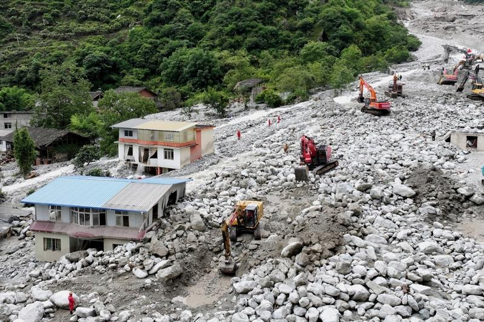

中国四川省康定市3日凌晨爆发山洪土石流，已造成8人遇难、19人失踪。土石流除造成康定市姑咱镇日地村房屋被冲毁，还有雅康高速公路一座隧道间桥梁坍塌，导致车辆坠落和人员伤亡。
新华社报导，四川省甘孜藏族自治州康定市「803」突发山洪泥石流（土石流）灾害应对处置指挥部指出，截至4日凌晨2时30分，灾害已造成康定市姑咱镇日地村房屋被冲毁，6人遇难、11人失联。
同时，雅康高速公路康定至泸定段日地1号隧道至2号隧道间桥梁坍塌，有4辆车共11人坠落桥下，其中1人获救送医，2人遇难、8人失联。
报导指出，当地共派出1554名人员、311台车辆及工程装备、68套通信设备、1500余件救援器材、8只搜救犬、1架轻型直升机、1架大型无人机开展人员搜救、医疗救治和交通、电力、通信保障等工作。
另据中国水利部微信公众号消息，3日和4日上午，水利部滚动召开防汛会商会，部署受灾范围监测、水文应急监测、风险隐患核查等工作，为四川康定山洪土石流灾害抢险救援提供支持。
据先前中新社报导，成都理工大学地质灾害防治与地质环境保护国家重点实验室教授王运生说，近期气温偏高，冰雪消融加快，加上近日持续降雨导致沟道堵溃，引发山洪土石流。